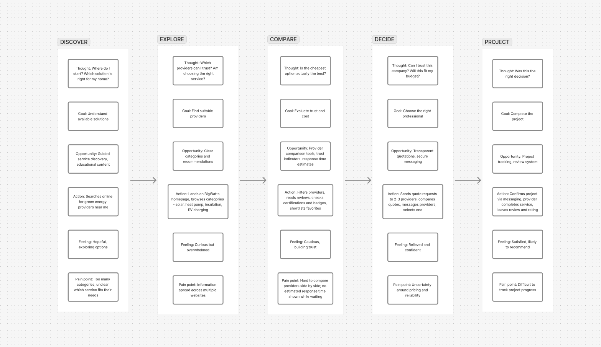
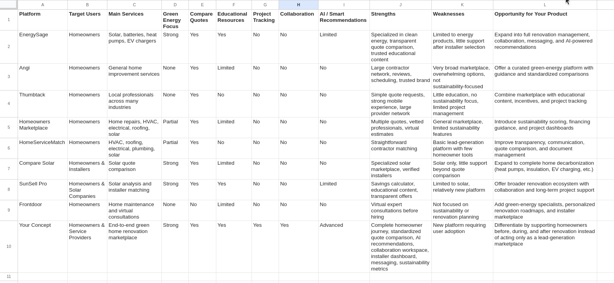

BigWatts
Designing a marketplace platform that connects homeowners with trusted green energy professionals while providing businesses with the tools to manage clients, services, and projects in one place.
Project Overview
The Challenge
Homeowners interested in improving their home's energy efficiency often face a fragmented experience.
They need to:
- Search multiple websites to find qualified service providers
- Compare quotes and certifications
- Understand government grants and tax incentives
- Communicate through emails and phone calls
- Manage appointments, documents and payments across different platforms
Meanwhile, service providers rely on separate tools to manage leads, advertisements, invoices, customer communication, scheduling, and project tracking.
How might we create one platform that simplifies sustainable home improvement for homeowners while giving professionals everything they need to manage their business?
The Solution
Bigwatts is a marketplace platform connecting homeowners with verified green energy professionals across France and Canada.
The platform enables homeowners to discover nearby providers, compare services, estimate eligibility for government incentives, request quotations, and manage projects from a single interface. For professionals, Bigwatts centralises customer management, advertising, messaging, payments, scheduling, and business analytics into one integrated dashboard.
Design Process
The project followed a user-centred design approach:

FigJam Journey MapUnderstanding the Problem
Before designing the interface, I identified several assumptions about the challenges faced by both homeowners and green energy professionals. These hypotheses helped guide user research and validate whether the proposed solution addressed real user needs.
Homeowners struggle to identify trustworthy service providers.
Potential impact: Users postpone renovation projects because comparing businesses, certifications, and customer reviews requires too much effort.
Finding information about sustainable home improvements is overwhelming.
Potential impact: Users become discouraged before requesting quotations or exploring available renewable energy solutions.
Professionals rely on too many disconnected business tools.
Potential impact: Managing customers, advertisements, communication, and payments across multiple platforms creates unnecessary administrative work.
Competitive Analysis
I analysed existing marketplace and home service platforms to understand how they support provider discovery, business management, and sustainable renovation services. The objective was to identify opportunities for creating a more unified experience for both homeowners and professionals.

Google Sheets TableFinding 1 — Most platforms focus on a single stage of the journey
Existing products typically specialise in either discovering service providers or managing customer relationships, requiring users to switch between multiple services throughout a renovation project.
Finding 2 — Business tools are often separated from the customer experience
Homeowners and professionals frequently rely on different platforms for communication, quotations, payments, and project management, resulting in fragmented workflows for both user groups.
Opportunity: Design a single platform that supports the complete journey—from discovering providers and requesting quotations to managing projects and customer relationships.
User Research
To better understand the needs of both sides of the marketplace, I conducted five semi-structured interviews lasting approximately twenty minutes each. Participants were encouraged to describe real experiences when searching for home improvement services or managing customers.
Recruitment criteria
- Homeowners interested in sustainable home improvements
- Professionals providing renewable energy or home improvement services
- Participants with previous experience requesting or managing renovation projects
| ID | Profile | Experience |
|---|---|---|
| P1 | Homeowner | Interested in installing solar panels |
| P2 | Homeowner | Recently completed an energy renovation |
| P3 | Solar installation professional | Manages residential projects |
| P4 | Electric vehicle charging installer | Works with residential clients |
| P5 | Energy consultant | Advises homeowners on energy efficiency |
Research Insights
Trust is the biggest factor when choosing a provider.
Most homeowners wanted more than price—they wanted reassurance through reviews, completed projects, certifications, and transparent business information.
"I don't mind paying more if I know the company is reliable."
Design opportunity: Make provider profiles detailed, transparent, and easy to compare.
Users spend too much time searching across multiple websites.
Participants described switching between search engines, maps, company websites, and social media before contacting a provider.
"I probably visited ten websites before sending my first enquiry."
Design opportunity: Centralise provider discovery, comparison, messaging, and quotations within one platform.
Professionals need better customer management tools.
Businesses often relied on separate software for messaging, appointments, invoices, and customer follow-up.
"Everything is scattered between emails, spreadsheets, and messaging apps."
Design opportunity: Create an integrated dashboard for managing clients, services, advertisements, and communication.
Users value a guided experience when exploring sustainable solutions.
Participants appreciated tools that simplified complex information and helped them understand which services matched their needs.
"I don't always know which solution is right—I just want someone to guide me."
Design opportunity: Support decision-making with clear information architecture, search filters, and guided user flows.
Research-Based Personas
The interview findings revealed three recurring user profiles. These personas represent behavioural patterns rather than individual participants and were used to prioritise design decisions throughout the project.
"I know I want solar panels, but I don't know which installer I can actually trust."
Goals
- Find qualified local professionals
- Compare offers confidently
- Complete renovations without unexpected issues
Pain Points
- Difficult to compare providers
- Unclear certifications
- Information spread across multiple websites
Needs
- Verified professionals
- Transparent reviews
- Simple project tracking
"I'd invest in renovations if I actually understood what financial support I could receive."
Goals
- Reduce renovation costs
- Understand available grants
- Estimate project affordability
Pain Points
- Complex eligibility rules
- Government websites are difficult to navigate
- Uncertainty about final costs
Needs
- Eligibility calculator
- Clear financial guidance
- Simple application support
"Half my day is spent switching between WhatsApp, invoices, calendars and customer emails."
Goals
- Spend more time with customers
- Reduce administrative work
- Grow the business efficiently
Pain Points
- Multiple disconnected tools
- Repeated manual work
- Difficult customer follow-up
Needs
- Integrated business dashboard
- Centralised communication
- Automated workflows
Ideation & Design Exploration
Using insights gathered during research, I explored multiple approaches before deciding on the final product direction.
Challenge 1 — How might homeowners confidently choose the right professional?
Simple business directory
Rejected
Provides little information to support decision-making.
Traditional marketplace
Rejected
Focuses on price rather than trust and expertise.
Verified professional profiles
Selected
Combines certifications, reviews, portfolios and quotations in one place.
Challenge 2 — How might homeowners better understand available incentives?
External government links
Rejected
Interrupts the user journey.
Static information pages
Rejected
Difficult to personalise for each project.
Interactive eligibility checker
Selected
Provides personalised guidance early in the renovation journey.
Information Architecture
Before designing interfaces, I organised the product around the homeowner journey—from discovering professionals to managing completed projects.
Key Design Decisions
Verified Professional Profiles

Problem: Users struggled to determine which providers were trustworthy.
Solution: Combine certifications, reviews, portfolios and business information into a single profile.
Impact: Reduces uncertainty during provider selection.
Integrated Incentive Calculator
Problem: Financial incentives were difficult to understand.
Solution: Guide users through a short questionnaire to estimate eligibility.
Impact: Makes renovation costs more transparent.
Professional Dashboard
Problem: Professionals relied on multiple disconnected tools.
Solution: Centralise appointments, customers, invoices, messaging and project management.
Trade-off: Increased feature complexity balanced against reduced administrative workload.
Usability Testing
Placeholder — this section will be replaced following moderated usability testing.
Task 1 — Find a local installer
Observation: Participants understood the marketplace concept quickly but initially looked for a search bar before using the available filters. Some users were unsure whether providers were already verified or if they could compare multiple installers. Users appreciated seeing provider details, ratings, and service categories but wanted more location-based information.
Iteration: A clearer search entry point was added above the provider listings, with filters for location, service type, and provider category. Provider cards were improved to highlight key trust indicators such as ratings, completed projects, and service areas.
Task 2 — Check incentive eligibility
Observation: Participants were interested in incentives but did not immediately understand where to find this information. Some expected eligibility details directly on provider profiles, while others searched within their account dashboard. Users wanted reassurance that incentives were adapted to their location and project type.
Iteration: An incentives information section was introduced earlier in the user journey. Eligibility information was linked to project categories and presented alongside relevant services, helping users understand potential financial support before requesting a quotation.
Task 3 — Request a quotation
Observation: Users successfully completed the quotation request flow but hesitated when asked to provide project details. Some participants were unsure how much technical information was required and worried about making incorrect choices. Users preferred a guided form rather than a traditional contact request.
Iteration: The quotation request process was simplified into progressive steps. Explanations and examples were added for technical fields, allowing homeowners to describe their needs without requiring expert knowledge. A confirmation screen was added to reassure users that their request had been successfully sent.
Testing showed that users were able to complete the main marketplace journey but needed stronger guidance around trust, incentives, and technical terminology. The main improvements focused on reducing uncertainty, improving provider transparency, and making renewable energy services more accessible to non-expert homeowners.
Accessibility Considerations
Colour
Colour contrast was considered to support readability across light and dark themes.
Typography
Consistent typography and spacing establish a clear visual hierarchy.
Interaction
Interactive elements include consistent states, clear labels and accessible touch targets.
Responsive Design
Layouts adapt across desktop, tablet and mobile using reusable design tokens.
Technical Considerations
Design decisions were informed by implementation constraints throughout the project to ensure the proposed experience could realistically be built.
Multi-country Platform
Support for France and Canada required localisation of incentives, currencies, regulations and available service providers.
Professional Dashboard
A unified dashboard consolidates messaging, appointments, invoices, customer management and project tracking.
Internationalisation
The interface supports English and French while maintaining a consistent design system across both languages.
Reflection
This project explored how thoughtful product design can simplify the complexity of sustainable home renovation. Designing for multiple user groups required balancing homeowner needs with business workflows while maintaining a cohesive experience.
Reflection to be expanded once the project reaches production and usability testing is complete.